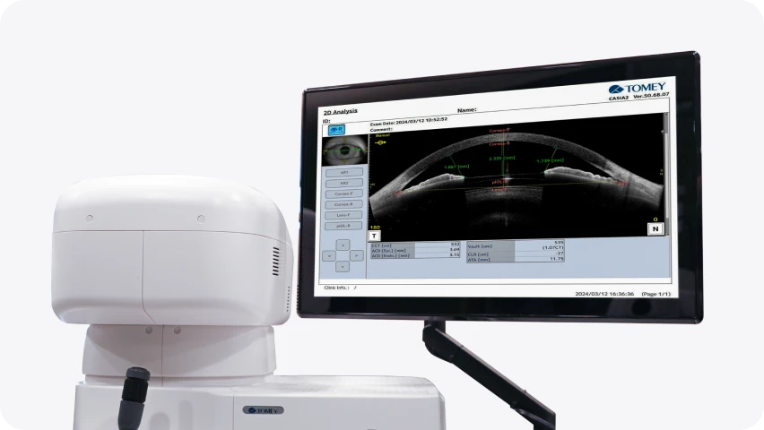
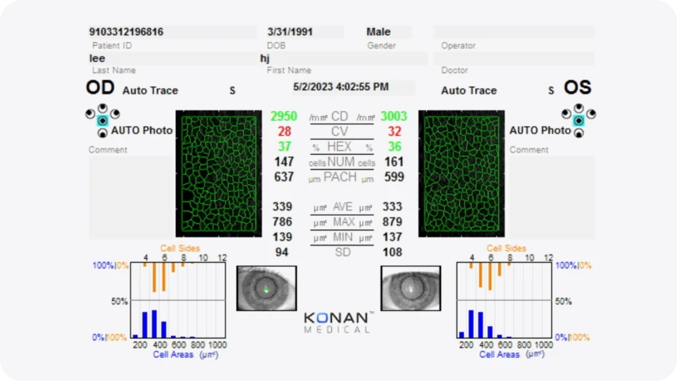
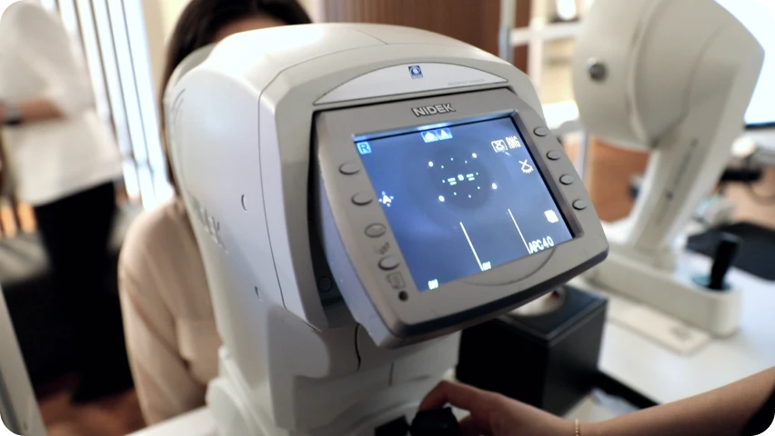
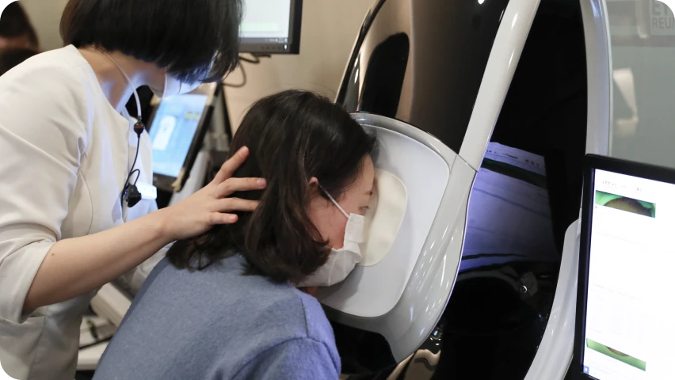
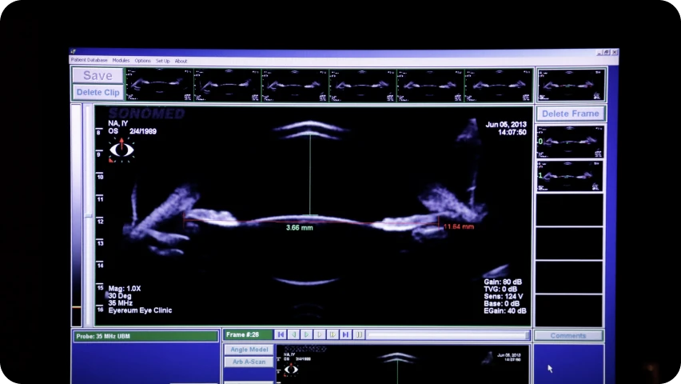

비바 ICL의 시력 설계
가까운 거리부터 먼 거리까지, 생활 시거리를 고려합니다.
노안은 가까운 거리에 초점을 맞추는 능력이 떨어지면서 스마트폰, 책, 서류, 모니터 작업이 불편해지는 상태입니다. VIVA ICL은 노안이 시작된 환자에서 근거리뿐 아니라 중간거리와 원거리까지 함께 고려하는 렌즈삽입술입니다.
VIVA ICL은 각막을 절삭하지 않고, 본인의 수정체를 보존한 채 노안으로 인한 근거리 불편과 굴절 이상을 함께 고려하는 안내렌즈삽입술입니다. 아이리움안과는 ICL 장기 임상 연구와 렌즈 사이즈·볼팅값 분석 경험을 바탕으로 환자 눈의 구조, 노안 정도, 생활 속 시거리까지 고려해 1:1 맞춤 노안 렌즈삽입술을 설계합니다.
수정체 보존
각막 보존
다양한 거리 시력 고려
노안 환자용 렌즈
노안은 가까운 거리에 초점을 맞추는 능력이 떨어지면서 스마트폰, 책, 서류, 모니터 작업이 불편해지는 상태입니다. VIVA ICL은 노안이 시작된 환자에서 근거리뿐 아니라 중간거리와 원거리까지 함께 고려하는 렌즈삽입술입니다.
EVO 계열의 ICL은 노안 유무와 관계없이 근시 교정을 목표로 하며 굴절력 교정 범위가
제시되어 있으며 비바 ICL은 초점 심도 확장과 근거리 시력 향상을 특징으로 안내하고 있습니다.
노안 교정이라고 하면 백내장 수술에서 사용하는 다초점 인공수정체를 먼저 떠올릴 수 있습니다.
비바 ICL ICL은 본인의 수정체를 보존한 채 눈 안에 렌즈를 삽입하는 방식이므로, 백내장이 없는
비교적 젊은 노안 환자에서 하나의 선택지로 고려될 수 있습니다. 단, 백내장이 이미 진행된 경우에는
비바 ICL보다 백내장 수술 및 인공수정체 선택이 더 적합할 수 있으므로 정밀검사가 필요합니다.
비바 ICL도 ICL 계열 렌즈삽입술이기 때문에 렌즈가 눈 안에서 안정적으로 위치할 수 있는지 확인하는 것이 중요합니다. 수술 전에는 전방 깊이, 각막내피세포, 안압, 수정체 상태, 렌즈 삽입 공간, 예상 볼팅값을 확인해야 합니다. 아이리움안과는 ICL 렌즈 사이즈와 볼팅값 연구 경험을 바탕으로 환자의 눈 구조와 노안 정도를 함께 분석해 VIVA ICL 수술 적합성을 판단합니다.
전방 깊이 검사

각막내피세포 검사

안압 검사

수정체·망막 검사

볼팅값 예측

비바 ICL,
이런 분께 추천합니다.
노안과 근시를 함께
교정하고 싶은 분
백내장은 없지만 가까운 거리가
불편한 분
근거리·중간거리·원거리 시야를
함께 고려하고 싶은 분

각막이 얇아 레이저 수술이
부담되는 분
비바 ICL 수술 전, 가장 많이 묻는 질문
비바 ICL은 어떤 수술인가요?
비바 ICL은 백내장 수술과 다른가요?
EVO+ ICL과 비바 ICL은 무엇이 다른가요?
비바 ICL은 40대 이상이면 누구나 가능한가요?
비바 ICL ICL도 수술 후 어떻게 관리하나요?